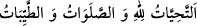
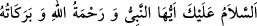
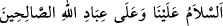
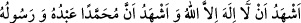

ediyor.” Yâni, ‘Kendimi tesbih ederim, kendimi tesbih ederim. Rahmetim gazâbımı
geçti.” buyuruyor. “diye seslendi.” Yüceler yücesinden şöyle bir nida geldi: “Yaklaş,
ey halkın en hayırlısı! Yaklaş, ey Ahmed! Yaklaş, ey Muhammed!” Sonra Rabbim beni
kendisine o kadar yakın kıldı ki “Sonra (Muhammed’e) yaklaştı,(yere doğru)sarktı. O
kadar ki (birleştirilmiş) iki yay arası kadar, hatta daha da yakın oldu.” (en-Necm,
53/8-9) âyetinde buyurduğu gibi oldum.”
Rivâyet edilmiştir ki Rasûlullah (s.a.) yedinci semâdan Sidre’ye Cebrâil (a.s.)’ın
kanadı üzerinde, oradan daha da yükseklere refref denilen geniş yaygı üzerinde
çıkarıldı.
Şeyh Abdülvehhâb Şa‘rânî der ki: “Bize göre refref, tahtırevana benzer bir binektir.”
Cebrâil (a.s.) Peygamberimiz’in ardından şöyle seslendi: “Ey Muhammed, Allah seni
övüyor. Dinle ve itâat et! O’nun kelâmı seni korkutmasın.”
Rasûlullah (s.a.) Allah’a senâ ve övgü ile başlayarak:
“
et-Tahıyyâtü lillâhi ve’s-salevâtü ve’t-tayyibât.” dedi.
Yâni, “Söz, beden ve mal ile yapılan bütün ibadetler Allah’a âittir.”
Allah Teâlâ da şöyle buyurdu:
“
es-Selâmü aleyke eyyühe’n-nebiyyü ve
rahmetullâhi ve berakâtüh = Selam sana, ey Peygamber! Allah’ın rahmeti ve
bereketi üzerine olsun...” Rasûlullah (s.a.) Hakk’ın selamını daha da genelleştirerek:
“
es-Selâmü aleynâ ve alâ ibâdillâhi’s-sâlihîn = Selam
bize ve Allah’ın sâlih kullarına olsun!” buyurdu. Bunun üzerine Cebrâil (a.s.):
“
Eşhedü ellâ ilâhe illallah ve eşhedü enne
Muhammeden abdühû ve rasûlüh = Şâhidlik ederim ki Allah’tan başka ilah yoktur.
Yine şâhidlik ederim ki Muhammed O’nun kulu ve Rasülû’dür.” dedi. Bütün melekler
de ona uyarak şehâdet getirdiler.[29]
Büyüklerden birisi şöyle demiştir: Rasûlullah (s.a.) Sidretü’l-müntehâ’ya varıncaya
kadar, suyun ve havanın yarıldığı gibi felekler de hareketlerinde bir duraksama
olmaksızın yarıldı. Sidretü’l-müntehâ’ya varınca refref üzerine oturdu. Nurlar âlemi
yarıldı, kademeyn makamını geçip arşa ulaştı. Yâni “Rahman arşa istivâ etti” (Tâhâ,
20/5) âyetinin mefhumundan anlaşılan istivâ mahalline ulaştı. Bunların hepsi bedeni ile
olmuştur. Sonra istivâ mahallini gördü. Terkib ve tedbir âleminden ayrıldığı için kendi
cinsinden (mahlûkattan) hiçbir yoldaşı kalmadı. Bedeni bakımından bir yalnızlık hissi
onu kapladı. Ebû Bekir (r.a.)’ın sesi ile O’na: “Ey Muhammed, dur. Rabbin salat
ediyor” diye nidâ olundu. Rasûl-i Ekrem (s.a.) sakinleşti. Sonra O’na şu âyet okundu:
“Sizi karanlıklardan aydınlığa çıkarmak için üzerinize rahmetini gönderen O’dur.
Melekleri de size istiğfar eder.” (el-Ahzâb 33/43).
İşte bu, sevgililerin lisânı, dostların ve arkadaşların konuşma üslûbudur. Bu, manevî
kapıların ilkidir. İşâret ve mânâ denizi buradan başlar. Bu, basit isrâdır. Cisimler âlemi